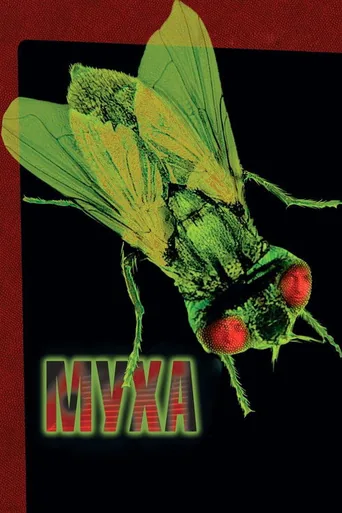

Муха 1986
Талантливый и немного эксцентричный ученый Сет Брандл изучает проблемы телепортации. Начав с перемещения в пространстве неодушевленных предметов, гений науки решает поэкспериментировать с живыми существами. Воодушевленный удачным результатом опыта по телепортации обезьяны, он сам хочет стать объектом эксперимента. Но по воле случая в стерильную камеру залетает муха. Это маленькое насекомое навсегда меняет жизнь Сета — он становится другим. Другим существом.
Открыть в каталогеДанные и постеры принадлежат их правообладателям. Этот продукт использует TMDB API, но не одобрен и не сертифицирован TMDB.